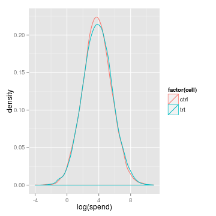
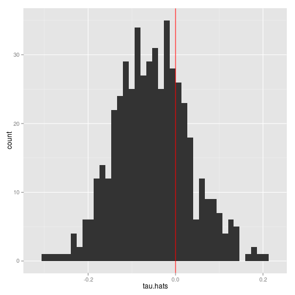
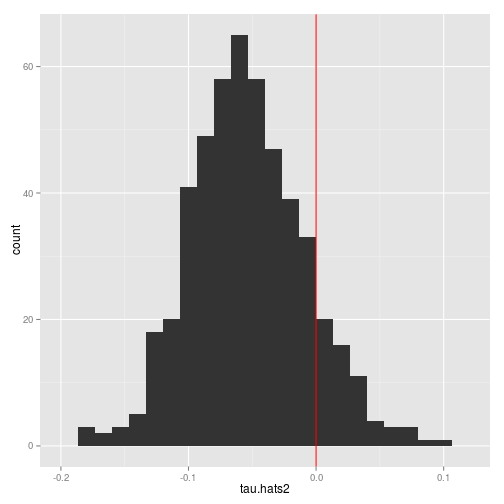
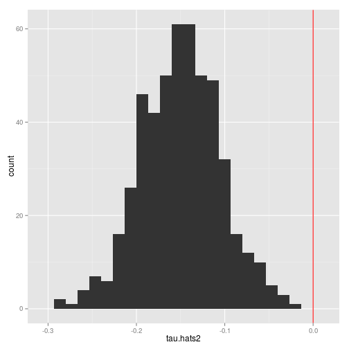

In my experience, the most common statistical question witin a company—bar none—is “How long should I run my experiment for?”
In other words, they want a power calculation.
Although the standard approach to doing power calculations is well-understood, I haven't found it to be very effective as a business process within a data-driven company.
The problem is that the key concepts for a conventional power calculation are difficult to grasp.
Even very smart people—researcher, science journalists etc.—have trouble understanding the proper interpretion of p-values.
Type I and Type II errors might be the least descriptively-named concepts in history.
Even the name “power calculation” suggests something obscure but at the same time something rote that does not require much thinking beyond pluggin the right things into a fomula.
This is unfortunate, because a well done power analysis can be like a dry rehearsal for the experiment, exposing problems in plan beyond just a too-small proposed sample size.
So what's my solution? It's pretty simple—I just simulate data from the experiment many times and then plot the empirical distribution of the effect size, using the same code that will use to analyze the experiment. This isn't at all complicated. Modern computers are so fast that I can, interactively, work with the person desiging an experiment and how them how different assumptions about effects sizes and choices of sample size affect likely outcomes. Doing this can help users of experiments get a more more intuitive sense of the relationship between sample size and sampling variance in the quantity they estimate.
Below, I describe my basic strategy for helping someone conduct a power calculation. At the end, I work through a full example.
Picking a good outcome metrics is critical for the experiment. Sometimes the right metric is obvious, but other times, ther are several viable candidates, each with pluses and minuses. A commong tradeoff is between importance and speed of measurement. For example, you can measure clicks almost instantly; something like “how did a project turn out (as measured by feedback)” could take months or years. Only a person immersed in the business—usually the one needing the power calculation—can decide which metrics make sense to use (once they know the power trade-offs). When presented with the question of what metrics to look at, would-be experimenters often want to split the baby and just look at a whole bunch of outcomes. However, people can be easily convinved of why this isn't a good idea (a link to this cartoon can help).
A classic power calculation makes use of the fact that the sampling distribution of the average treatment effect will be approximately normally distributed. The central limit theorem means that the you don't need to know the distribution the metric is calculated from. However, doing the power calculation via simulation has several advantaes. First, at least to me, I think it's harder to mess up than the alternative—writing probability statements, transforming variables, using the right critical values etc. Second, simulating the data also lets you to explore more complex treatment effect scenarios beyond just shifts in a mean. For example, it's not uncommon for a product manager to hypothesize that a feature might “only work for big clients”—doing a standard power calculation in such a setting would be a challenge, but with simulation, it's easy. Finally, being forced to simulate the data forces you to understand the data generating process beyond just finding the mean and standard deviation.
The would-be experimenter probably cannot tell you “I want to be able to detect a 5% increase with 80% probability at the 0.05 significance level.” If they could, they'd probably do their own power calculation. However, when you show them what will happen with a particular metric and particular sample size, they can often talk about the results in terms of the business case—i.e., how much confidence they need in the magnitude and direction of some effect.
Me: Let's imagine this feature decreases converstions by 5%. If we ran the experiment a whole bunch of times, this is the distribution of effect estimates we'd get (run simulation and make plot)
Them: Woah - there's a 40% chance we'd find a positive effect? That's no good. We'd walk right into that.
Me: Ok, let's increase the sample by 50% (re-run simulation with new sample size)
Them: Ah - that's much better. I can see that if it's that bad, we'll almost certainly see a negative effect.
Notice the words “p-value” or “Type I or Type II” error never needed to be said. We can talk strictly about effect sizes and magnitudes and probabilities.
To make this more concreate, let's suppose we have to make some changes to the business (the status quo isn't possible), but we have two options to test. For simplicity, we'll just call one option the control and the other cell the treatment. Let's suppose that the metric is how much a client spends. Suppose we are indifferent, from a cost stand-point between the two methods, so at the end of the experiment, we're just going to pick the one that does better. In this horse-race scenario, we don't care about statistical significance at all—we're going to pick the cell with the best point estimate. However, we'd like to have some sense of our chance of picking the losing horse. The point of our analysis is to see how often we pick the wrong hose for a given sample size, under an assumption about how bad the bad hourse actually is.
Suppose we know that historically, spend is log normally distributed, with parameters:
mu <- 3.8
sigma <- 1.8
And suppose we think the experimental feature will raise spend by 5%.
effect <- 0.05
We can simulate the data assuming 500 subjects in each experimental cell:
n <- 500
set.seed(6152011)
spend.control <- exp(rnorm(n, mu, sigma))
spend.treatment <- exp(rnorm(n, mu + effect, sigma))
df <- data.frame(spend = c(spend.control, spend.treatment), cell = c(rep("ctrl",
n), rep("trt", n)))
and can then plot the distribution:
library(ggplot2)
## Loading required package: methods
qplot(log(spend), colour = factor(cell), geom = "density", data = df)

As expected, the empirical distribution of the treatment values is left-shifted vis-a-vis the control. We can also perform the regression we would actually perform in practice:
m <- lm(log(spend) ~ cell, data = df)
summary(m)
##
## Call:
## lm(formula = log(spend) ~ cell, data = df)
##
## Residuals:
## Min 1Q Median 3Q Max
## -6.06 -1.21 -0.05 1.21 5.58
##
## Coefficients:
## Estimate Std. Error t value Pr(>|t|)
## (Intercept) 3.8813 0.0808 48.01 <2e-16 ***
## celltrt -0.2001 0.1143 -1.75 0.08 .
## ---
## Signif. codes: 0 '***' 0.001 '**' 0.01 '*' 0.05 '.' 0.1 ' ' 1
##
## Residual standard error: 1.81 on 998 degrees of freedom
## Multiple R-squared: 0.00306, Adjusted R-squared: 0.00206
## F-statistic: 3.06 on 1 and 998 DF, p-value: 0.0804
We can see that with this particular choice of random seed, the point estimate of the treatment is more than 20%—a pretty substantial over-statement, though 5% (the true value) is within the 95% prediction interval. Let's now simulate running this experiment multiple times.
get.tau <- function(effect, sample.size) {
spend.control <- exp(rnorm(sample.size, mu, sigma))
spend.treatment <- exp(rnorm(sample.size, mu + effect, sigma))
df <- data.frame(spend = c(spend.control, spend.treatment), cell = c(rep("ctrl",
sample.size), rep("trt", sample.size)))
m <- lm(log(spend) ~ cell, data = df)
coef(m)[2]
}
tau.hats <- replicate(500, get.tau(-0.05, 1000))
qplot(tau.hats, binwidth = 0.4/30) + geom_vline(aes(xintercept = 0), colour = "red")

We can see that with this sample size, it looks like about a 1/3 of the time, with this sample size we'll report a positive treatment effect, despite the truth being a 5% reduction. Confirming what we can see graphically:
mean(tau.hats > 0)
## [1] 0.26
This probably isn't good enough. Let's try tripling the sample size:
tau.hats2 <- replicate(500, get.tau(-0.05, 3000))
qplot(tau.hats2, binwidth = 0.4/30) + geom_vline(aes(xintercept = 0), colour = "red")

Eyeballing, it looks like 10% of the mass is to the right of 0.0.
mean(tau.hats2 > 0)
## [1] 0.118
Maybe we can live with this sample size of 3,000. But let's assume the effect is worse—that it's actually a 15% fall off in the treatment. What does that look like?
tau.hats2 <- replicate(500, get.tau(-0.15, 3000))
qplot(tau.hats2, binwidth = 0.4/30) + geom_vline(aes(xintercept = 0), colour = "red")

OK! If bad horse is really bad, we've got almost no chance of picking the bad horse. Obviously this kind of analysis needs to be tailored to the situation at hand, but the nice thing about this simulation is that makes changes is usually quite simple.
comments powered by Disqus